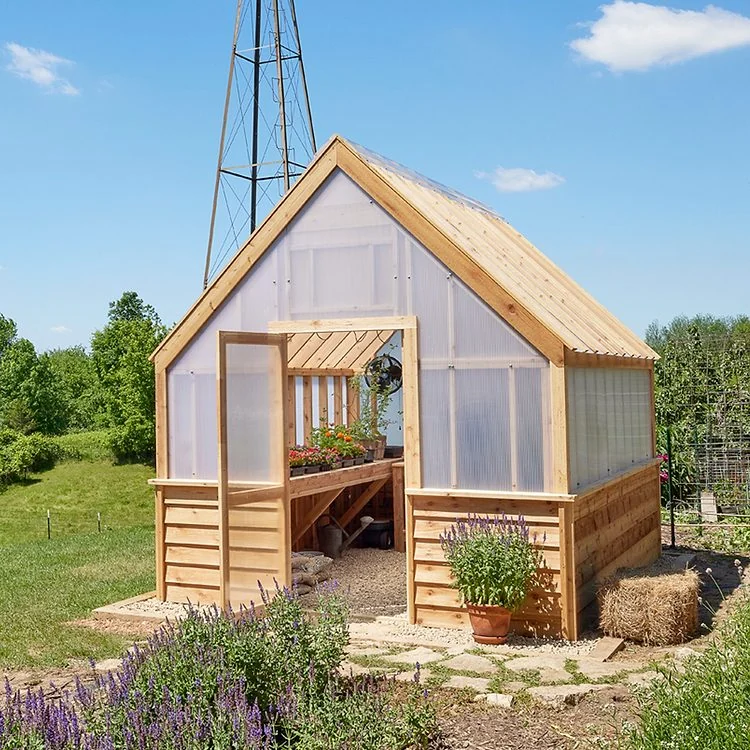

Begin by taking a look at all city bylaws and building codes into consideration. It’s recommended you go through this process with your own city bylaws so you don't get any surprises later when your structure is already built! With bylaws considered, you might need to factor building the greenhouse a few feet away from the fence for necessary clearance, or consider the height as a freestanding structure. Try and think of all the possible variables before you commit to a location.
In addition to any bylaws and codes, exposure is key. Select a sunny, level location for your greenhouse that receives at least six hours of direct sunlight each day. Choose an area with good drainage and convenient access to water, electricity, and your home.
Decide how large your greenhouse should be and what plants you want to grow. Certain vegetables, like leafy greens and root vegetables need more square footage, while hydroponics and potted plants can save space. Sketch the layout, including space for growing beds, shelves, walkways, ventilation, and storage.
Common greenhouse materials include treated lumber or metal framing, greenhouse plastic or polycarbonate panels, screws, hinges, brackets, and weatherproof sealant. Think about looking through local buy-and-sell groups for cheaper materials. Gather measuring tools, a saw, a drill, a level, and safety equipment before beginning construction.
A sturdy foundation keeps the greenhouse level and protects it from shifting or strong winds. You can build on a gravel base, concrete slab, or treated-wood frame, depending on your budget, soil conditions, and greenhouse size. Beginner (and the experienced) DIYers find wooden frames to be the easiest to work with ,but make sure you’re choosing the right wood for outdoor applications, such as pressure treated cedar. You can even purchase wooden frame structure kits online or there are aluminum frame greenhouses available too!
Construct the walls and roof frame according to your design, checking each section for square and level alignment. Secure the frame firmly to the foundation so the structure can withstand weather. Consider the lay of your roof, and that peaked roofs with sturdy ridge beams can hold against strong winds. The construction of the walls is entirely up to you. Some opt for all walls made from windows, or go with half of the walls crafted from horizontal wood boards and the upper half from reclaimed windows. Whatever you decide, enjoy the process and let your creativity shine!
Attach greenhouse plastic, glass, or polycarbonate panels to the frame, making sure the covering is tight and properly sealed. Leave enough flexibility for expansion and contraction while sealing gaps that could allow drafts or moisture inside. This step is the most important, as it helps preserve the conditions needed to grow year-round!
Air circulation is so important in a greenhouse! Without a vent window, roof vents, or some other way for air to circulate, your greenhouse will be too humid (unless you’re going for tropical). Install roof vents, side vents, or exhaust fans to control heat and humidity. Set up a hose, drip-irrigation system, or rainwater collection barrel so your plants can receive consistent moisture.
Finish the greenhouse with raised beds, containers, benches, shelving, and a clear walkway. Add a thermometer, shade cloth, and automatic vents if needed, then introduce plants gradually while monitoring temperature, light, and humidity. Really use your creativity here! Take time to experiment with different layouts and placements. Building a greenhouse is a rewarding process, and you want to make sure it works for you!
Begin by taking a look at all city bylaws and building codes into consideration. It’s recommended you go through this process with your own city bylaws so you don't get any surprises later when your structure is already built! With bylaws considered, you might need to factor building the greenhouse a few feet away from the fence for necessary clearance, or consider the height as a freestanding structure. Try and think of all the possible variables before you commit to a location.
In addition to any bylaws and codes, exposure is key. Select a sunny, level location for your greenhouse that receives at least six hours of direct sunlight each day. Choose an area with good drainage and convenient access to water, electricity, and your home.

Decide how large your greenhouse should be and what plants you want to grow. Certain vegetables, like leafy greens and root vegetables need more square footage, while hydroponics and potted plants can save space. Sketch the layout, including space for growing beds, shelves, walkways, ventilation, and storage.
Common greenhouse materials include treated lumber or metal framing, greenhouse plastic or polycarbonate panels, screws, hinges, brackets, and weatherproof sealant. Think about looking through local buy-and-sell groups for cheaper materials. Gather the following materials and tools before beginning construction:
A sturdy foundation keeps the greenhouse level and protects it from shifting or strong winds. You can build on a gravel base, concrete slab, or treated-wood frame, depending on your budget, soil conditions, and greenhouse size. Beginner (and the experienced) DIYers find wooden frames to be the easiest to work with ,but make sure you’re choosing the right wood for outdoor applications, such as pressure treated cedar. You can even purchase wooden frame structure kits online or there are aluminum frame greenhouses available too!
Construct the walls and roof frame according to your design, checking each section for square and level alignment. Secure the frame firmly to the foundation so the structure can withstand weather. Consider the lay of your roof, and that peaked roofs with sturdy ridge beams can hold against strong winds. The construction of the walls is entirely up to you. Some opt for all walls made from windows, or go with half of the walls crafted from horizontal wood boards and the upper half from reclaimed windows. Whatever you decide, enjoy the process and let your creativity shine!
Attach greenhouse plastic, glass, or polycarbonate panels to the frame, making sure the covering is tight and properly sealed. Leave enough flexibility for expansion and contraction while sealing gaps that could allow drafts or moisture inside. This step is the most important, as it helps preserve the conditions needed to grow year-round!
Air circulation is so important in a greenhouse! Without a vent window, roof vents, or some other way for air to circulate, your greenhouse will be too humid (unless you’re going for tropical). Install roof vents, side vents, or exhaust fans to control heat and humidity. Set up a hose, drip-irrigation system, or rainwater collection barrel so your plants can receive consistent moisture.
Finish the greenhouse with raised beds, containers, benches, shelving, and a clear walkway. Add a thermometer, shade cloth, and automatic vents if needed, then introduce plants gradually while monitoring temperature, light, and humidity. Really use your creativity here! Take time to experiment with different layouts and placements. Building a greenhouse is a rewarding process, and you want to make sure it works for you!